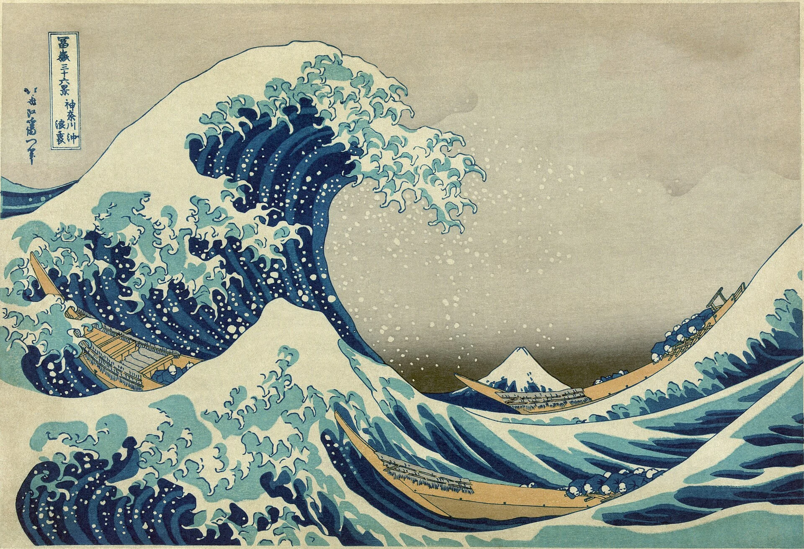

04 / HISTÓRIAS / 時
O presente tem
muitas camadas.
Da cerâmica às cidades, há rupturas, trocas e vozes para escutar.
Abra este capítulo ↓UMA CRONOLOGIA INTRODUTÓRIA
Viaje pelo tempo.
Questione as imagens.
Selecione um marco.
As datas são âncoras para começar, não uma história completa.
OUTRAS PORTAS